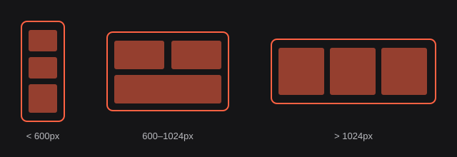

Лабораторна робота № 3 · Варіант 7
Методичні рекомендації з адаптивного вебдизайну
Автор: Купець Олексій, група ІПЗ-26 · Редакція від
Основні поняття
Ці рекомендації призначені для здобувачів, які вже знайомі з основами HTML і CSS та хочуть навчитися робити сторінки, зручні на будь-якому пристрої. Матеріал побудовано від загальних понять до практичних порад, тож його можна читати послідовно або переходити до потрібного розділу через зміст.
Що таке адаптивний вебдизайн
Адаптивний вебдизайн (RWD) — це підхід, за якого одна й та сама сторінка зручно відображається на екрані телефона, планшета, ноутбука та великого монітора. Користувач не повинен масштабувати сторінку пальцями чи прокручувати її горизонтально: макет сам підлаштовується під доступну ширину.
Раніше для різних пристроїв створювали окремі версії сайту: мобільну, планшетну та повну. Це подвоювало обсяг роботи й призводило до розбіжностей у вмісті. Адаптивний підхід розв’язує проблему інакше: вміст один, а подання змінюється залежно від умов перегляду.
Замість того щоб створювати окремі сайти для кожного нового пристрою, ми можемо зробити один дизайн, що реагує на потреби користувача.
У довіднику MDN наголошено, що адаптивний вебдизайн — це не окрема технологія, а підхід до вебдизайну
. Саме тому далі мова йде не лише про конкретні властивості CSS, а й про порядок прийняття рішень.
Термінологія
Перед тим як переходити до коду, варто домовитися про терміни, які використовуються в документі.
- Вьюпорт (viewport)
- Видима область сторінки у вікні браузера. На мобільних пристроях її ширина залежить від налаштувань метатегу
viewport. - Точка зламу (breakpoint)
- Ширина вьюпорту, на якій макет помітно змінюється, наприклад кількість колонок зменшується з трьох до однієї.
- Медіазапит (media query)
- Умова в CSS, за якої застосовується певний набір правил: ширина екрана, орієнтація, тема оформлення тощо.
- Гнучка сітка
- Макет, у якому ширини колонок задано відносними одиницями (
%,fr), а не фіксованими пікселями. - Mobile-first
- Стратегія, за якої базові стилі пишуть для найменшого екрана, а для більших додають розширення.
- Щільність пікселів (DPR)
- Відношення фізичних пікселів екрана до логічних пікселів CSS; на сучасних телефонах становить 2–3.
Історія підходу
Термін запропонував Ітан Маркотт у [1] Тоді основним інструментом розмітки були плаваючі блоки, а сьогодні — Flexbox і Grid. Порада «робіть окрему мобільну версію сайту на піддомені m.» давно застаріла: пошукові системи індексують переважно мобільну версію сторінки, тому вона має містити весь вміст.
Рекомендовану ширину основного контейнера в навчальних матеріалах раніше вказували як 960 px максимум 1200–1280 px з гнучкими полями, оскільки фіксована ширина не враховує різноманіття екранів.
Технічні основи
Адаптивна сторінка тримається на трьох складниках: правильному метатегу viewport, гнучкій сітці та медіазапитах. Якщо прибрати будь-який із них, макет на мобільному пристрої поводитиметься непередбачувано.
Метатег viewport
Без цього метатегу мобільний браузер вважає, що сторінка розрахована на ширину близько 980 px, і просто зменшує її. Текст стає дрібним, а медіазапити не спрацьовують. Метатег розміщують у <head> кожної сторінки:
<!DOCTYPE html>
<html lang="uk">
<head>
<meta charset="utf-8">
<meta name="viewport" content="width=device-width, initial-scale=1">
<title>Адаптивна сторінка</title>
</head>
<body></body>
</html>Значення width=device-width вирівнює ширину вьюпорту з логічною шириною екрана, а initial-scale=1 вимикає початкове масштабування. Забороняти користувачу збільшувати сторінку (user-scalable=no) не можна: це погіршує доступність.
Гнучка сітка
Гнучка сітка будується за кількома правилами:
- ширини задаються відносно батьківського елемента:
- у відсотках — для простих макетів;
- через одиницю
fr— у CSS Grid:1frзаймає одну частку вільного місця;minmax(0, 1fr)не дає колонці розтягнутися через довгий вміст.
- відступи й розміри шрифту вимірюються в
remтаem; - максимальна ширина обмежується властивістю
max-width, а неwidth.
Перевести фіксовану ширину блоку в відсотки допомагає класична формула: ширина у % = ширина блоку ÷ ширина контейнера × 100. Наприклад, блок 300 px у контейнері 1200 px займає 25 %.
Медіазапити
Медіазапит застосовує правила лише тоді, коли виконано умову. У підході mobile-first використовують min-width, тобто стилі додаються в міру зростання екрана:
.cards { display: grid; gap: 1rem; grid-template-columns: 1fr; }
@media (min-width: 40em) && (orientation: landscape) { /* <-- так писати НЕ можна */ }
@media (min-width: 40em) {
.cards { grid-template-columns: repeat(2, minmax(0, 1fr)); }
}
@media (min-width: 64em) {
.cards { grid-template-columns: repeat(3, minmax(0, 1fr)); }
}Другий рядок лістингу навмисно показує помилку: умови в медіазапиті поєднують словом and, а не символами &&. Типові точки зламу наведено в таблиці.
| Пристрій | Ширина | Колонок |
|---|---|---|
| Телефон | < 640 px | 1 |
| Планшет | 640–1023 px | 2 |
| Ноутбук і монітор | ≥ 1024 px | 3 |
Зображення й типографіка
Навіть ідеальна сітка не врятує сторінку, якщо зображення виходять за межі екрана, а текст неможливо прочитати без масштабування. Цей розділ присвячено вмісту всередині сітки.
Гнучкі зображення
Найпростіше правило — обмежити ширину зображення шириною контейнера: img { max-width: 100%; height: auto; }. Атрибути width і height у розмітці все одно потрібні: браузер заздалегідь резервує місце й сторінка не «стрибає» під час завантаження[2].

Для фотографій варто віддавати різні файли залежно від екрана. Атрибут srcset перелічує варіанти, а sizes підказує браузеру, яку ширину займе зображення:
<img src="photo-800.jpg"
srcset="photo-400.jpg 400w, photo-800.jpg 800w, photo-1600.jpg 1600w"
sizes="(min-width: 64em) 33vw, 100vw"
width="800" height="533" alt="Опис зображення">Текст і спеціальні символи
Розмір основного тексту не повинен бути меншим за 16 px, а довжина рядка — оптимально 45–75 символів. Плавну зміну розміру заголовків дає функція clamp(): значення змінюється між мінімумом і максимумом пропорційно ширині вьюпорту.
На вузьких екранах довгі слова ламають макет. М’який перенос дозволяє браузеру розірвати слово в заздалегідь визначеному місці: інтернаціоналізація, мікросервісна архітектура. Нерозривний пробіл, навпаки, забороняє розрив, наприклад між ініціалами і прізвищем: Е. Маркотт.
| Символ | Запис | Призначення |
|---|---|---|
| (пробіл) | | нерозривний пробіл: 16 px |
| — | — | тире між частинами речення |
| – | – | діапазон: 640–1023 |
| « » | « » | лапки-«ялинки» |
| ≤ ≥ × ÷ | ≤ ≥ × ÷ | математичні знаки: LCP ≤ 2,5 с |
| (невидимий) | ­ | м’який перенос у довгих термінах |
| < > & | < > & | екранування в лістингах коду |
Хімічні та математичні записи оформлюють елементами sub і sup: H2O, 210 = 1024.
Практичні рекомендації
Теорія корисна лише тоді, коли перетворюється на звичку. Нижче зібрано порядок роботи над адаптивною сторінкою, способи перевірки результату та найпоширеніші помилки.
Підхід mobile-first
Працювати зручно в такій послідовності (перші два кроки — підготовчі, тому нумерація продовжується з третього):
- Зверстати вміст для екрана шириною 320–375 px в одну колонку.
- Збільшувати ширину вікна, доки макет не почне виглядати незграбно, і там додати точку зламу.
- Повторювати попередній крок до ширини великого монітора.
Такий підхід змушує одразу визначити, що на сторінці головне: на маленькому екрані немає місця для другорядних блоків.
Тестування
Найшвидший спосіб перевірити адаптивність — режим емуляції пристроїв в інструментах розробника. У Chrome він вмикається поєднанням Ctrl + Shift + M після відкриття панелі клавішею F12. Контрольні етапи перевірки позначено літерами:
- немає горизонтальної прокрутки на ширині 320 px;
- усі посилання та кнопки мають розмір щонайменше 24×24 px;
- сторінка коректно збільшується до 200 % без втрати вмісту.
Наявність горизонтальної прокрутки можна перевірити в консолі. Якщо результат більший за нуль, якийсь елемент виходить за межі екрана:
> document.documentElement.scrollWidth - document.documentElement.clientWidth
0
Емулятор не замінює реальних пристроїв: перед публікацією сторінку варто відкрити хоча б на одному справжньому телефоні.
Типові помилки
Список упорядковано від найменш до найбільш критичної помилки, тому нумерація зворотна:
- Однакові відступи на всіх екранах: на телефоні вони «з’їдають» корисну площу.
- Приховування важливого вмісту на мобільних пристроях замість його перекомпонування.
- Таблиці й блоки коду без горизонтальної прокрутки, які розширюють усю сторінку.
- Відсутній метатег
viewport, через що медіазапити не працюють зовсім.
Підсумки
Наостанок — короткі висновки та перелік джерел, на які спираються ці рекомендації.
Висновки
Адаптивний вебдизайн — це набір практик: метатег viewport, гнучка сітка, гнучкі зображення та медіазапити. Підхід mobile-first допомагає почати з головного й поступово додавати складність, а регулярне тестування на різних ширинах дозволяє вчасно помітити проблеми.
Сам цей документ теж адаптивний: змініть ширину вікна браузера й подивіться, як зміст переміщується над основним текстом, а таблиці отримують власну прокрутку. Для порівняння з невалідною розміткою перегляньте тестовий файл із навмисними помилками.
Джерела та примітки
- Marcotte E. Responsive Web Design // A List Apart. 2010. ↩ До тексту
- Явні розміри зображення запобігають зміщенню макета (метрика CLS). ↩ До тексту
- MDN Web Docs. Responsive design. Mozilla.
- HTML Living Standard. WHATWG.